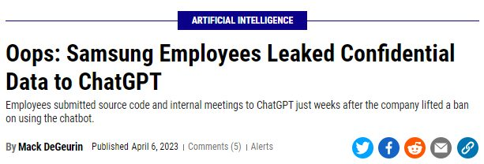

Generative AI
It only took 2 months for ChatGPT to boast 100 million active users. To put that speed of hyper-growth into context, it took TikTok nine months to do the same.
People are taking to ChatGPT at an unprecedented rate, and while the capabilities of the technology is exciting – it’s not without its risks.

While there’s an obvious need for corporations to stay current and adopt transformative technologies, doing so with an overdose of agility (in exchange for due diligence) presents its own dangers. As such it is equally important to establish clear guidelines and policies for the responsible use of AI within the workplace.
In this article, we will explore why organisations – large and small – should prioritize the introduction of AI policies centered around responsible use.
Introduce an AI Policy to Promote Ethical Decision-Making
Ethical Implications
Generative AI systems, such as GPT, have the capability to generate highly realistic and human-like text. However, they lack true understanding of context, values, and ethical considerations. Relying solely on generative AI for ethical decision-making may lead to outcomes that inadvertently perpetuate biases, promote discrimination, or violate ethical standards.
Lack of Accountability
Generative AI systems are black boxes, meaning their decision-making processes are often opaque and difficult to interpret. This lack of transparency makes it challenging to hold AI systems accountable for their outputs and to explain how a particular decision was reached. This can be problematic, especially when making critical ethical decisions that require justification and accountability.
Unintended Consequences
Generative AI models are trained on large amounts of data, but they may not fully comprehend the real-world implications of their outputs. Unintended consequences can arise when generative AI is used for ethical decision-making without careful human oversight. These consequences may include unforeseen biases, incorrect judgments, or outcomes that contradict ethical principles, potentially leading to harm or legal repercussions.
Human Responsibility and Delegation
Ethical decision-making is a complex process that often requires human judgment, empathy, and understanding of context. Relying solely on generative AI systems may absolve individuals and organizations of their responsibility to make informed ethical decisions. It is important to remember that AI should be seen as a tool to support decision-making rather than a substitute for human reasoning and moral judgment.
Legal and Regulatory Compliance
Companies must comply with legal and regulatory frameworks that govern ethical decision-making. Relying solely on generative AI systems without proper oversight can put a company at risk of non-compliance. It is crucial to ensure that AI systems are aligned with legal requirements, ethical guidelines, and industry standards.
Mitigating Bias and Discrimination
One of the critical challenges associated with AI adoption is the potential for bias and discrimination in decision-making processes. When AI algorithms are trained on biased datasets or lack diverse representation, they can inadvertently perpetuate existing biases, leading to unfair outcomes. Gen AI policies provide an opportunity for teams to address bias mitigation and fairness concerns. For example, finance teams can ensure AI-powered loan approval systems don’t discriminate based on demographic factors, while management teams can implement unbiased AI tools for employee evaluations, promotions, and compensation decisions.
Ensuring Transparency and Accountability
Transparency and accountability are crucial when utilizing AI in the workplace. Gen AI policies can promote the responsible use of AI by encouraging transparency in the decision-making process. This allows employees to understand how AI systems arrived at specific conclusions or recommendations. It also helps build trust between teams and AI systems, making it easier to identify and rectify potential errors or biases. By fostering accountability, businesses can confidently embrace AI technologies and reap their benefits while minimizing potential risks.
Data Security and Privacy
Data security and privacy concerns have become paramount in today’s data-driven world. Implementing Gen AI policies can help safeguard sensitive business data and personal information. These policies can outline strict protocols for data access, storage, and sharing, ensuring compliance with data protection regulations such as the General Data Protection Regulation (GDPR). By integrating AI privacy safeguards into the policies, businesses can build customer trust and protect themselves from potential data breaches or privacy violations.
Do you Have an AI Policy in Place to Govern Responsible Use?
Establishing an AI policy for responsible use is crucial. Firstly, it helps protect your company’s reputation and builds trust with customers, investors, and the public. Demonstrating a commitment to responsible AI practices reassures stakeholders that your company prioritizes ethical considerations, fairness, transparency, and accountability.
Secondly, an AI policy helps mitigate legal and regulatory risks. As AI technologies continue to advance, governments worldwide are increasingly enacting regulations to address potential biases, privacy concerns, and discriminatory practices. Having a comprehensive AI policy ensures your company complies with existing and future regulations, reducing the risk of legal and financial penalties.
Moreover, an AI policy promotes internal consistency and fairness. It provides guidelines for employees on the appropriate use of AI, preventing misuse or unintended consequences. It encourages responsible data handling, safeguards against biases in AI algorithms, and promotes diversity and inclusivity.
Lastly, an AI policy fosters innovation. By addressing ethical concerns upfront, it encourages employees to explore and develop AI technologies with a responsible mindset, leading to more sustainable and beneficial applications that positively impact society as a whole.